september, 2005
JALcc, Release JAL sources
Introduction
Introduction
Releasing a new version of a JAL library or JAL mainprogram, involves one or more of the following steps:
In JALcc these tasks can all be perfomed with just one mouse-click. The job can be started through de main menu "File" --> "BackUp-Upload". Here a view after performing the selected tasks
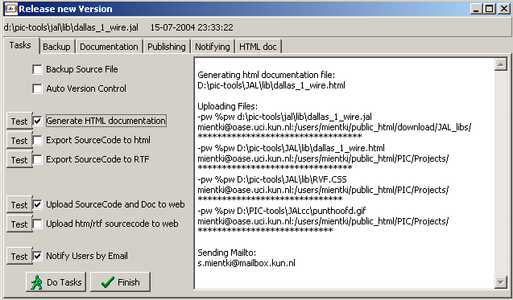
With the testbuttons, it's possible to perform just one of the tasks. The tasks "export SourceCode to HTML/RTF" can also be reached directly from the mainmenu item "File".
To be done
Backup of the new release
to be done
Generating Documentation
Introduction
JALcc can generate html-documents from the raw JAL source files. These html-files can either be used as personal documentation, but can also be used to publish the information on the internet. The html-file will include links to the source-file and to all the included files.
All the files, i.e. the html-doc-file, the source-file and the included files can be uploaded (through some commandline uploader) to a website with the same mouse-click. And this single mouse-click can also generate an email to a list of interested people. Above all this, a backup of the file can be made automatically.
The document is build up from a fixed number of sections. Each section is detected through documentation tags. The general form of a documentation tag is "-- <tag" , so in JAL it will be recognized as comment. In general a section starts at the correct section tag and ends when another documentation tag is encountered.
If a specified section tag is not available, that section will not be included in the documentation. It's also not necessary that the tags are in the same order as the order in the documentation file. At the moment, the following sections are created (if specified tags are found):
The JAL comment tags are removed from the text and also the lines are concatanated, unless a line starts with an extra space character, in which case a new line is generated.
So the following JAL source code
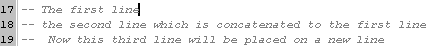
Will be translated in the html documentation to:
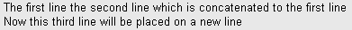
The generated HTML-documentation file is formatted with RVF.CSS (Casacade Style Sheet file), which will be uploaded together with the documentation file. For the moment the CSS-file is fixed in JALcc. For the future, a wysiwyg html-editor is forseen in JALcc, which will also modify the CSS-file.
To each doc file, a icon-link is added, which shows Javi's beatiful JALcc rings.
(<link rel="icon" href="jalccring_small.gif" type="image/gif">), if available, this file will be uploaded too.
Title section
Tag: -- <title
Content: just the text on the same line as the tag
The following JAL-code
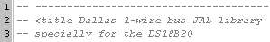
will generate the following documentation part
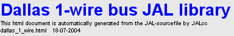
License section
Tag: -- <license
Content: all upto the next section tag
The following JAL-code,
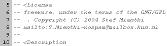
will generate the next documentation part (note also the translation of the email address, to a directly clickable link)
Version information section
Tag: -- <version
Content: download links + all upto the next section tag
At least a download link to the source code will be inserted. Depending on what kind of color-coded files are generated, also the links to these color-coded files are included.
In the next example, both HTML and RTF color-coded source files were created, so the following JAL-source code
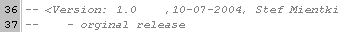
will generate the following part in the documentation file
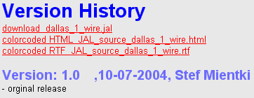
Description section
Tag: -- <description
Content: all upto the next section tag
The next JAL-code will normally put everything in the documentation file. If you don't want to place the list of functions in the documentation part, simply put a "<" in front of "interface", so it will be recognized as a (non-valid) documentation tag.
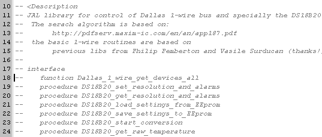
in which case the documentation of this part will be limited to
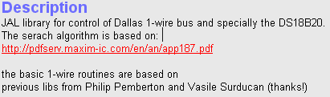
Example section
Tag: -- <example
Content: all upto the next section tag
The easyist way to create this is by using a real code part and mark it (through the right mouse button menu) as comment (";" are placed in front of each line). When converting this section to the documentation file, no line concatanation is performed.
So the following part of the example section
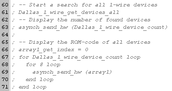
Will be added to the documentation file as:
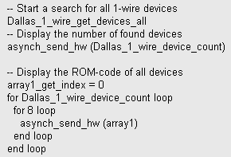
Included section
Tag: -- <code
Content: all valid JAL include statements, these lines will also contain a html-tag with links directly to the download of the specified include file. Also the "last modified data" and the orginal location of the included files will be reported (just for your own documentation).
If the JAL source contains:
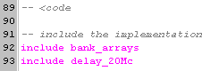
Then the documentation file will look like:
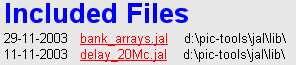
Public Procedures section
Tag: -- <code
Content: all public procedures, including their description
The doc-generator starts to search for public routines, starting at the code-tag: "-- <code"
It searches for lines starting with "procedure" or "function" (which may be preceeded by spaces or tabs). Then it reads the name of the routine, and if the name starts with an underscore "_", the routine is assumed to be an internal routine and thus ignored. Otherwise the routine is assumed to be a public routine and so it's incorporated in the doc.
After a valid public routine is found, the text above the procedure header (between 2 horizontal lines) is used as the text for the doc. (A horizontal line should have at least 10 minus signs.) When inserting this text, the JAL comment tags will be removed.
Example:
-- -----------------------------------------------------------------------------
-- loads alarm and resolution settings from the EEprom into the device's scratchpad
-- -----------------------------------------------------------------------------
procedure DS18B20_load_settings_from_EEprom
will be inserted in the document as
procedure DS18B20_load_settings_from_EEprom
loads alarm and resolution settings from the EEprom into the device's scratchpad
To prevent that the subheader with the procedure name in the documentation is polluted with the procedure parameters, you should place the parameters in JAL on the next line, like this
procedure DS18B20_set_resolution_and_alarms
(byte in device_index = 0,
byte in Resolution = 12,
byte in Talarm_high,
byte in Talarm_low) is
URL and Mail links
The document generator will recognize mail- and web-addresses, and will add the appropriate link tag, if they satifies the following rules:
Must start with one of the following (case-insensitive)
http://
mailto:
Must be at the end of a line or followed by a space.
If recognized as a valid URL or email-address, the link will be placed on a new line and a suitable html-tag will be added to the text.
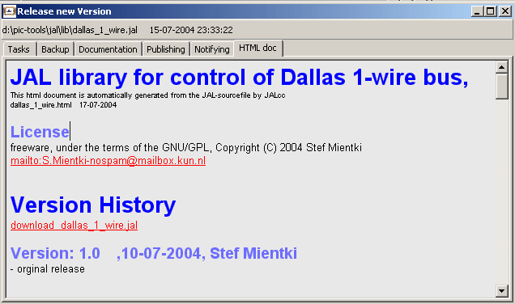
Directories
|
Where all the docs and sources are stored, can be set in the tabpage on the right. A short overview, is given below, where XXX stands for the orginal source path of the JAL-source that generates these documents.
|
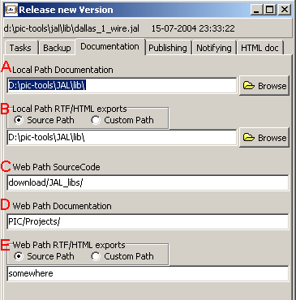 |
Publishing
|
A = the address used for uploading to the website, this address is in general different from the download address (see your providers information)
B = the base address for downloading / accessing your website. It's advised to use the lowest address here.
C = the FTP program, used to upload all the necessary files to the website. This must be a commandline uploader, in which you can pass the password through the commandline. I've good experiences with Putty and his derivates. PSFTP doesn't work for my site (the last slash always gets lost), but PSCP works perfectly.
D = the commandline, which can handle a number of macro substitues: %PW = password %F = the complete filename to be uploaded %WB = the base webpath, definied in B
E = password, if stored, it's stored in a coded file "<JAL-path>\JALcc_email_pw.xxx". |
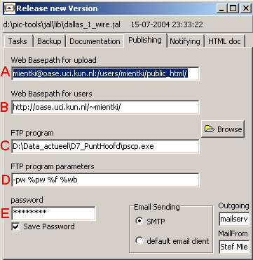 |
Notifying people
Email client
The emails can either be sent through the default email client or directly through smpt-server. It's advised to use the smtp-server directly, because it's more reliable. The smpt-client always uses port:25.
To guarantee the privacy of the mailed people, sending though smtp is done as individual messages. If the default email client is used (the user must press the send button for each mail), only the first address will be directed to the MailTo part, while all others are directed to the BCC-list.
The outgoing SMTP server and the MailFrom are only required when using SMTP directly. By placing the MailFrom address between <>, and placing a name in front of it, your email address will be less visible, especially in newsgroups.
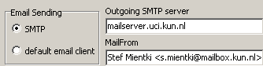
Email addresses
The address list can be edited directly. By placing an empty line in the address-list, only the addresses above that empty line will be used. This is handy for testpurposes or to maintain a subset list, that receives more than the total list.
The email addresses are stored in a separate file "<JALcc-path>\JALcc_email_addresses.txt".
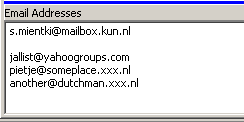 here, only the first address will be used
Subject, content
The subject and content is loaded from the file "<JALcc-path>\JALcc_email_upload.txt". This file can be edited by pressing the button ar just by any other plain-text-editor.
The first line of the file is used as the subject of the mail, while the other lines forms the content of the mail. After the file is loaded in the Notifying page, the text can aslo be edited, but all changes will be lost after the program closes.
A number of text-substitutes (case-insensitive) are available for use in both the subject part and the content part:
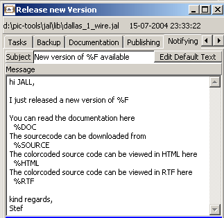